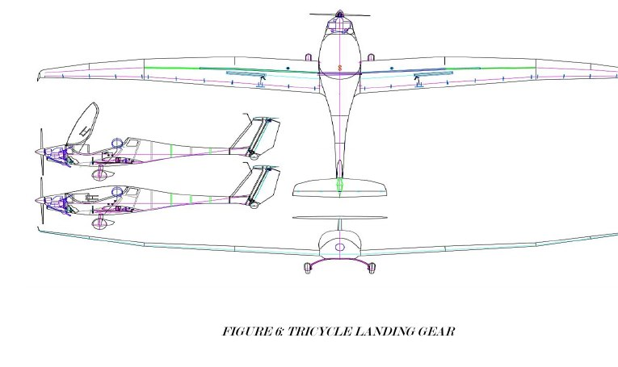
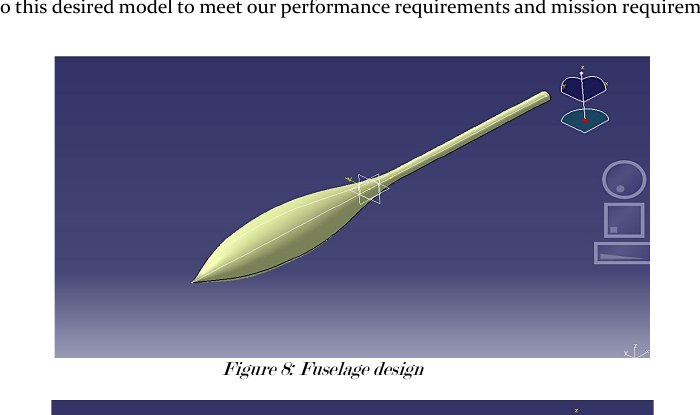
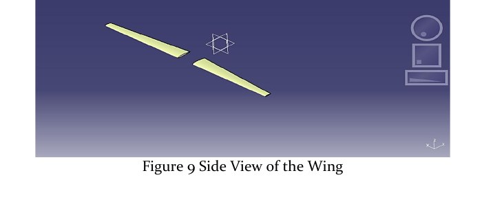
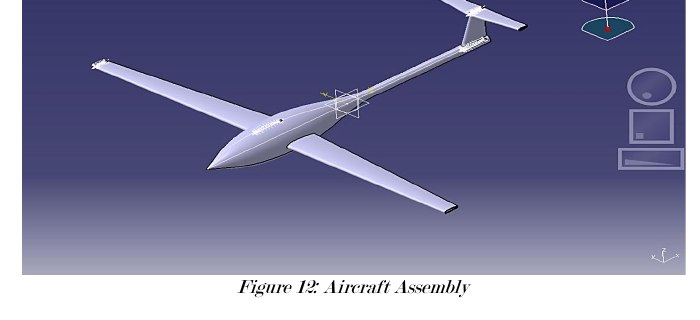
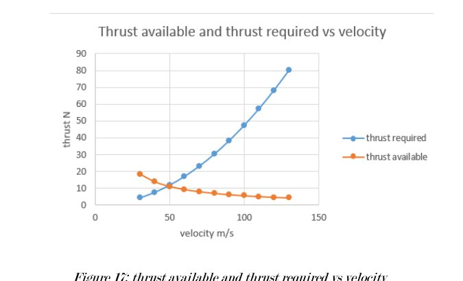
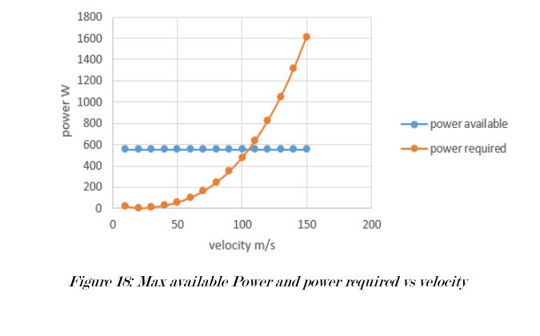
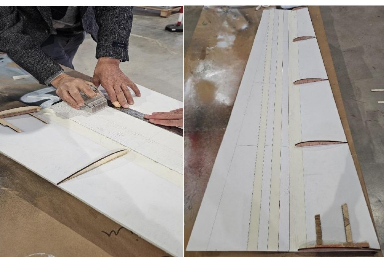
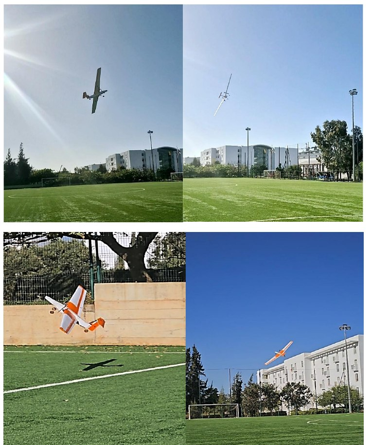

Team Capstone | RC Powered Glider | Raymer Sizing · NACA 4412 · CATIA V5 | Fabricated & Flight-Tested

Group capstone at the School of Aerospace Engineering, UIR Rabat — an all-female four-person team (christened PowerFly Girls) taking a Remote-Controlled powered glider from a written mission profile all the way through to a flying aircraft. The project deliverable was both the report (10 chapters, systematic design methodology per Raymer) and a physically built and flown airframe.
Widad Elyamani Sara Ait-Oubah Najwa Belguezzar Soukaina Eljaouhari Instructor: Prof. Omar Ashraf January 2025
The project runs the full aircraft-design loop for a small powered glider intended for surveillance and environmental-monitoring missions: reverse-engineer the design targets from analogous UAVs; iterate the takeoff weight with Raymer's buildup method; select an airfoil from a four-way comparison; size the wing, tail, fuselage, landing gear and control surfaces; model the whole aircraft in CATIA V5; compute drag, thrust and power curves to fix the operating envelope; verify stability by placing the CG within the acceptable range; and cost, fabricate and flight-test the airframe.
Design parameters (max altitude 762 m, range 3 km, Vcruise 26.25 m/s, aspect ratio 13) were selected in accordance with FAR Part 23 Level 1. The airfoil is NACA 4412, chosen for the best Cl/Cd across the candidate set (129.2 at α = 5.5°). CG check drove a mid-build modification: the fuselage was cut and re-lengthened, and the single nose motor was replaced with two wing-mounted 30 A motors (a 60 A motor wasn't available locally). The rebuilt aircraft flight-tested successfully — stable takeoff, controlled turns, clean landings.
Standard five-phase powered-glider mission:
Design targets set from reverse-engineering of comparable UAV gliders and matched to FAR Part 23.2005 (normal category, Level 1):
Takeoff weight was iterated using Raymer's buildup approach (Aircraft Design: A Conceptual Approach, 1989). The method starts from a guessed W0, computes fuel and empty-weight fractions from historical UAV-glider trends, and iterates until the input weight matches the output. Payload weight was set to 0.88 lb (battery, no camera). Converged solution feeds into wing loading, power sizing, and structural dimensioning downstream.
Four candidate airfoils were evaluated against the same design point on (Cl/Cd)max — the primary aerodynamic-efficiency metric:
| Airfoil | (Cl/Cd)max | α at max | Verdict |
|---|---|---|---|
| NACA 4412 | 129.22 | 5.50° | ✓ Selected — best efficiency |
| NACA 4415 | 119.36 | 5.50° | Runner-up; thicker section — extra drag |
| NACA 23012 | 93.08 | 5.75° | Lower L/D at target α |
| NACA 23015 | 78.78 | 5.75° | Weakest performer of the set |
Chord Reynolds number for the built aircraft: Re ≈ 359 000 — sitting between the two airfoil-data points (200k and 500k) at which Cl max is tabulated. Linear interpolation gives a 2D cl max = 1.529, and the standard 10 % reduction for 3D wing effects gives a wing CL max = 1.376 — the value that drives the wing-loading calculation.
Wing, tail, fuselage, landing gear and control surfaces were sized in sequence, each stage's output feeding the next:

Front / side / top elevations. Twin main wheels aft of the CG, single steerable nose wheel forward — the standard small-UAV configuration.
All sized components were modelled in CATIA V5 and assembled into a complete aircraft model, used as the dimensional reference for fabrication.

Load-bearing shell to house battery, motors, servos and electronics; tapered aft to reduce drag.

Wing built from the NACA 4412 airfoil section, span 2.15 m, tapered planform.

Complete CATIA assembly — high-mounted wing, T-tail, tricycle gear, twin-motor configuration. The dimensional master for the fabrication step.
Total drag was computed component by component — fuselage, wing, tail, landing gear, miscellaneous engine drag, and induced drag — and swept across the operational velocity range. The resulting thrust and power curves fix the operating envelope: minimum flight speed at the low-V intersection of thrust-required and thrust-available, maximum at the high-V intersection.

Thrust required (blue, parabolic) rises with V²; thrust available (orange) falls off with V. Intersection gives Vmax.

Power required scales as V³; power available roughly constant. Same intersection principle — sanity-checks the thrust plot from a different physical angle.
The airframe was built by the team from foam-sheet stock — a common choice for university RC gliders (light, cheap, forgiving to work with). Ribs and spars were cut from wood for structural stiffness. Wing panels were built with the correct chord-wise twist by making straight, evenly-spaced razor incisions on the underside and then hot-gluing the twisted foam into position — a low-tech but effective way to reproduce the design twist without a heat-forming rig.

Left: cutting the twist incisions with a razor tool. Right: laid-out panel with wood ribs bonded in position, ready for skin closing.
The first assembled airframe failed its CG check — a single motor in the nose pulled the CG too far forward, giving the aircraft a nose-down bias that would have made it uncontrollable in the air. The team's response was two coordinated design changes:
Both changes were driven by real supply and physics constraints, not by a redesign brief. This is exactly the kind of iterate-when-reality-pushes-back moment that separates a paper study from a built vehicle.
Flight-testing was carried out on the UIR football field. The modified airframe launched, climbed, held stable cruise and performed controlled turns before landing — all consistent with the design targets. The photo grid below is from the actual test flights.

Top row: climbing and cruise; bottom row: takeoff sequence and final approach. The re-worked CG and twin wing-motor configuration gave clean takeoffs and stable flight.
The project delivered a complete design-build-test cycle for a small powered glider UAV — a real airframe that flew, not just a set of calculations. The value of running the loop all the way to fabrication shows up exactly at the CG problem: on paper the single-nose-motor arrangement was fine, but the built aircraft revealed the instability, and the fix (re-lengthened fuselage plus twin wing motors) demanded both physical rebuilding and a supply-chain workaround. The successful flight test closed the loop on the design methodology — every stage from FAR-Part-23 target selection through Raymer weight sizing, airfoil comparison, CATIA modelling, and drag/thrust/power estimation was in the end justified by the aircraft actually flying.
✓ Project Outcomes